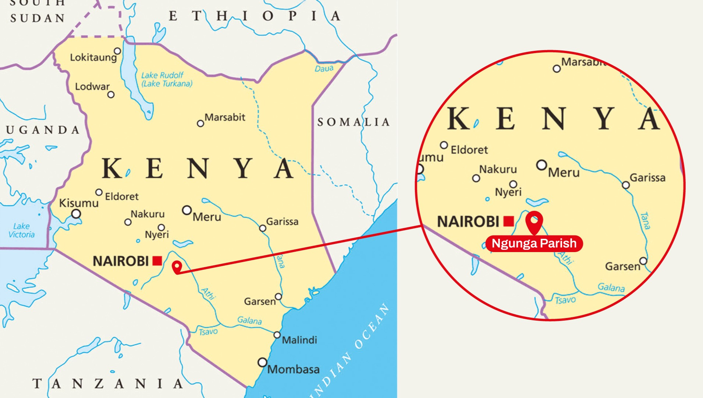
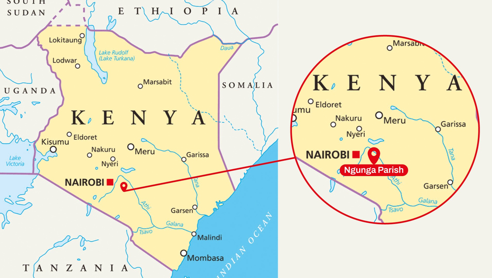

Perché costruire una scuola in Kenya?
L'ispirazione per questo progetto nasce da Suor Hitha, una mentore stimata e ex direttrice scolastica con cui abbiamo una lunga storia, inclusa la collaborazione per la fondazione di una scuola in Kerala, India. Ora in Kenya, Suor Hitha guida un team dedicato di suore indiane e keniote impegnate a offrire opportunità educative ai bambini che, a causa di difficoltà economiche, non possono frequentare le scuole pubbliche. La nostra iniziativa non solo mira a sottrarre questi bambini alla povertà attraverso l’istruzione, ma anche a creare opportunità locali per ridurre l’emigrazione illegale.
Uno sguardo dettagliato al progetto
Gruppo Nairobi sta costruendo una scuola primaria di alto livello nel cuore del Kenya, offrendo ai bambini un’istruzione di qualità che stimoli creatività e crescita. Con sei aule previste su un terreno donato, questa visione richiede €180.000 per diventare realtà. Il tuo supporto aiuterà a creare uno spazio dove le giovani menti possano prosperare.
Planimetrie e rendering
 

La scuola sorgerà in Kenya, a circa 90 km da Nairobi, nel comune di Ngunga Paris, all'interno del distretto di Machakos. Situata vicino al confine con la Tanzania, questa regione è caratterizzata da un alto tasso di povertà e da un accesso limitato a strutture educative di qualità.
Fai una donazione
Abbraccia l'opportunità di trasformare delle vite. Che tu possa dare molto o poco, ogni centesimo conta. Insieme, possiamo influenzare il futuro dell'istruzione in Kenya. È il momento di fare un passo verso un'istruzione migliore, e tu puoi contribuire a realizzarlo con la tua generosa donazione.
Sul Gruppo Nairobi
Siamo Gruppo Nairobi, un'organizzazione non-profit dedicata ad ampliare l'accesso all'istruzione per i bambini delle comunità svantaggiate. Guidati dalla convinzione che l'istruzione sia la chiave per lo sviluppo, lavoriamo per creare opportunità che responsabilizzino la prossima generazione. Con un forte impegno verso i valori comunitari, i nostri sforzi mirano a lasciare un impatto duraturo dove ce n'è più bisogno.
L'Associazione
Pierdomenico MazzaPresidente
Franco AbelaVicepresidente
Mattia RinaldiAmministratore